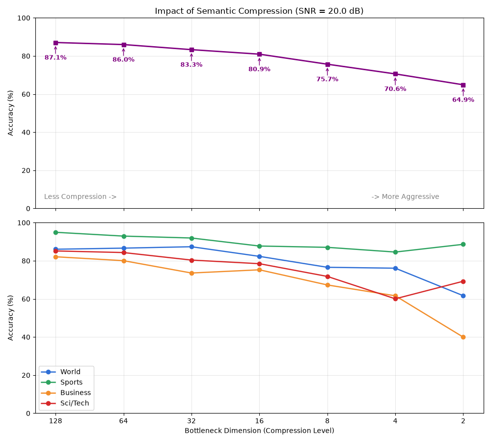
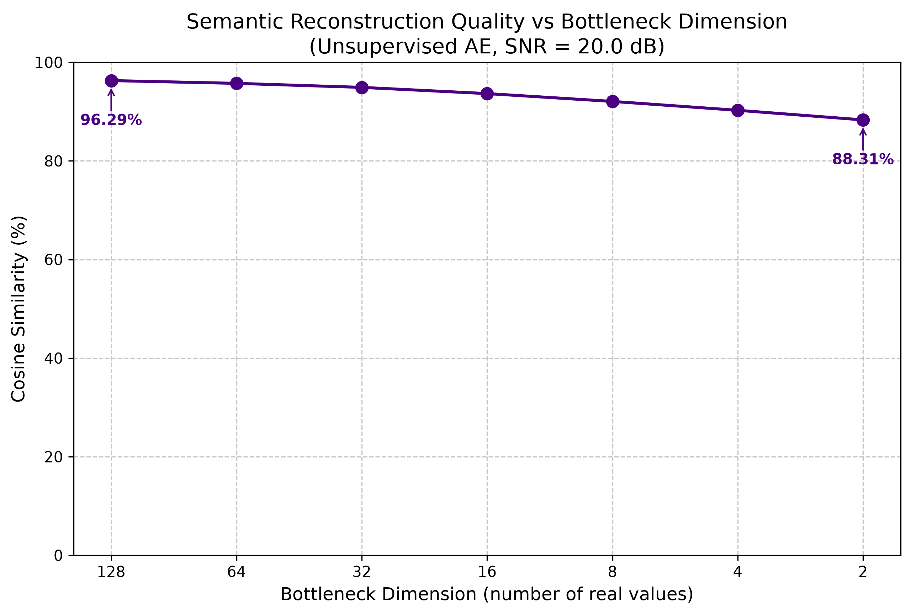
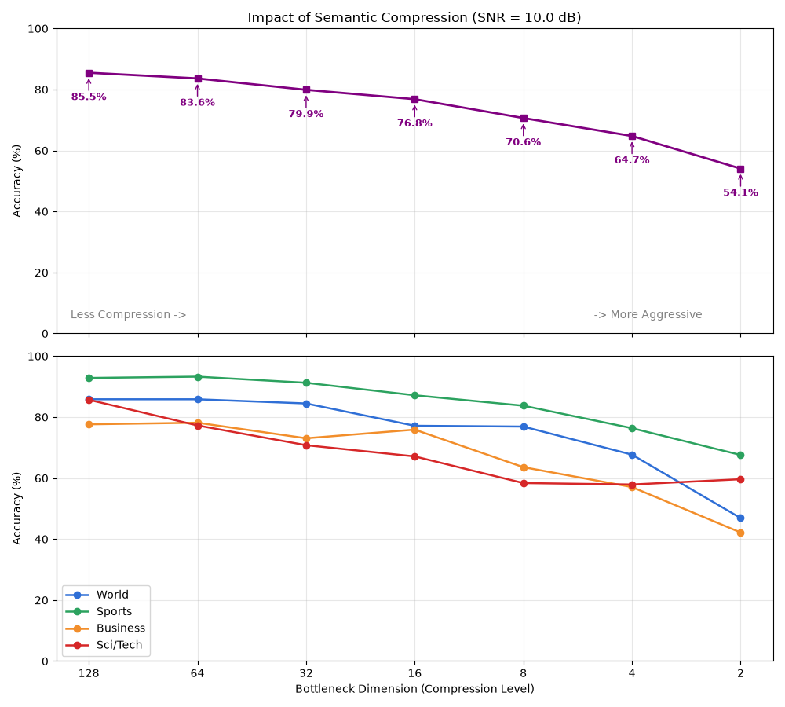
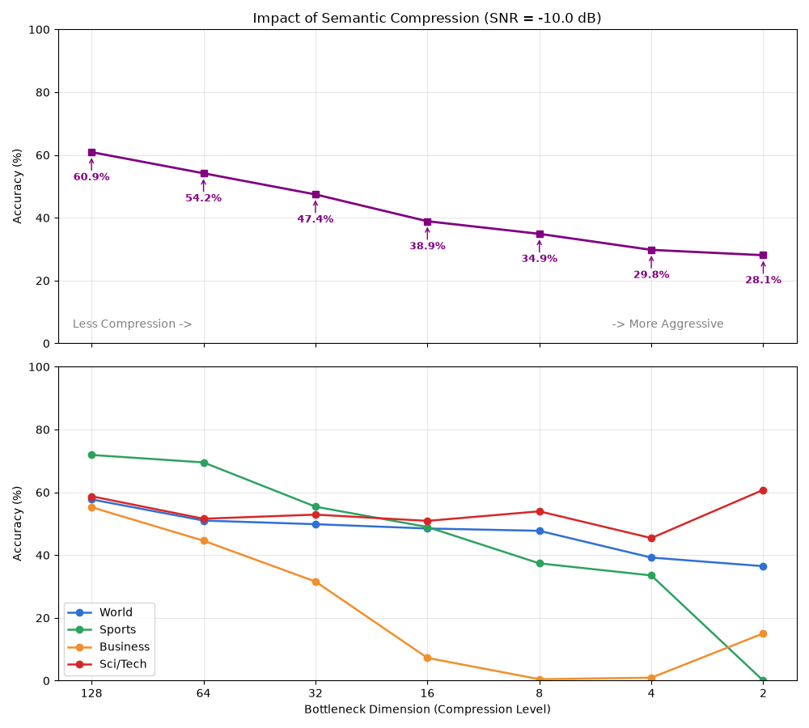
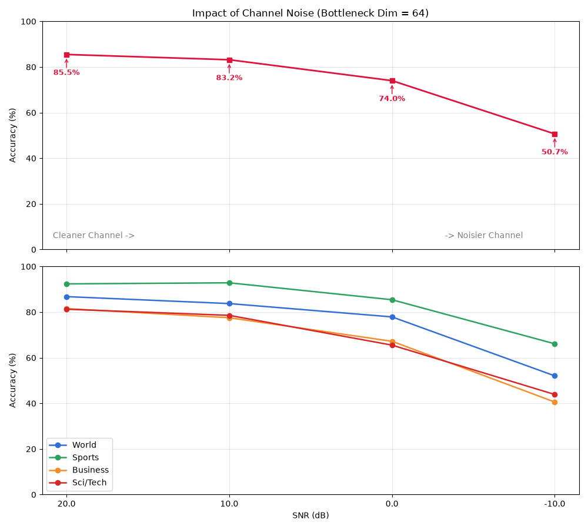
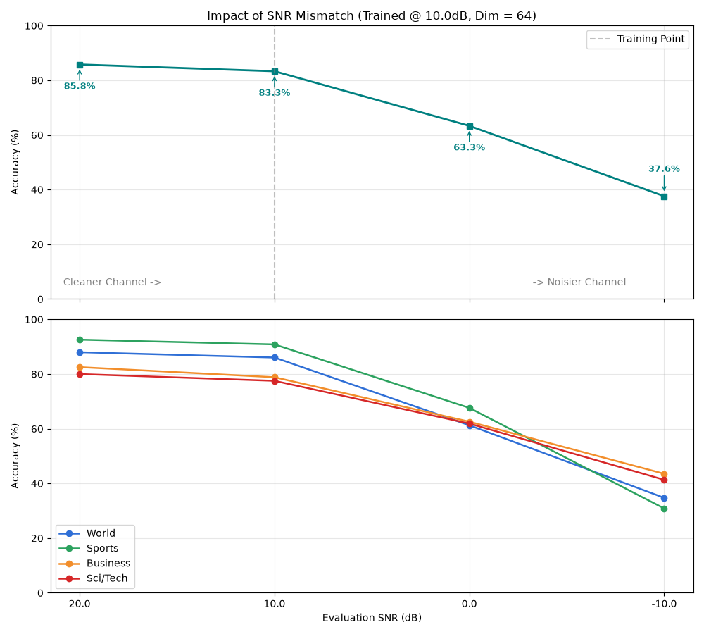

מסמך זה מרכז את התוצאות הסופיות והמעודכנות של מערכת ה-Autoencoder, לאחר שניתקנו את ההטיה (Bias) ודאגנו שהדחיסה תתבצע בצורה סמנטית טהורה ללא חשיפה לתגיות הסיווג.
[!IMPORTANT] הערה מתודולוגית: תנאי הרעש בבדיקה (Evaluation) בכל הניסויים המוצגים במסמך זה, עוצמת הרעש (SNR) המצוינת אינה תקפה רק לשלב האימון של הרשת, אלא מוחלת באופן פעיל גם על נתוני הבדיקה (Test Set) בשעת ההערכה. המערכת קולטת משפטים חדשים שמעולם לא ראתה, מנסה לדחוס אותם ולשדר, ובערוץ התקשורת מתווסף להם רעש AWGN אקראי חדש בזמן אמת. גישה זו מבטיחה שביצועי המודל והגרפים משקפים נאמנה את יכולות המערכת בתנאי שטח עוינים ואמיתיים.
בסביבה שבה הרעש אפסי, ראינו שהמערכת מצליחה להעביר משמעות ברמה גבוהה כשיש לה מספיק מימדים (כ-87.1% דיוק ב-128 מימדים). עם זאת, כאשר הכרחנו אותה לדחוס את כל המשמעות ל-2 מימדים בלבד (4 ביטים של מידע), יכולת הסיווג צנחה באופן ריאליסטי והגיוני ל-64.9%, מה שמוכיח שהמערכת נאלצת לוותר על מידע סמנטי אמיתי בהיעדר נפח ערוץ.

במבחן זה בדקנו אך ורק את היכולת של ה-Autoencoder לשחזר את וקטור ה-BERT המקורי, ללא שום קשר לסיווג לקטגוריות. המדד הוא "דימיון קוסינוס" (Cosine Similarity) המראה כמה קרובה המשמעות של המשפט המשוחזר למשמעות של המשפט המקורי (0% = חוסר קשר, 100% = משמעות זהה לחלוטין). ניתן לראות גרף "חלק" והגיוני: ככל שחונקים את הדחיסה למימדים קטנים יותר, הרשת נאלצת לאבד מידע סמנטי עדין, וההתאמה יורדת מ-96.2% (שחזור כמעט מושלם ב-128 מימדים) ועד 88.3% (שחזור גס בלבד ב-2 מימדים). הפער הזה בשחזור הגס הוא בדיוק מה שגורם לנפילה בסיווג שראינו בגרף הקודם!

[!NOTE] האשליה של 88.3% – למה זה בעצם שחזור חלש שמוביל לנפילה בסיווג? במבט ראשון, שחזור בציון של 88% עבור מימד 2 (הדורש העברה של אות 16-QAM אחד בלבד) נשמע כהצלחה גדולה. אולם, מדידות שביצענו על מרחב ה-BERT הגולמי חושפות מציאות שונה: אם נחליף את כלל משפטי המאגר בוקטור יחיד (הממוצע הכללי של כלל החדשות), ה-Cosine Similarity הממוצע שיעמוד מול כל משפט יהיה 85.98%. וקטורי שפה אינם מפוזרים באופן שווה במרחב, אלא שוכנים בתוך "חרוט" צר משותף (Redundancy שפתי). במימד 2, למערכת יש 16 מצבים שונים בלבד לחלק אליהם את העולם. היא מנצלת אותם כדי לשפר את המצב מווקטור יחיד (86%) ל-16 וקטורים אופטימליים, ומגיעה ל-88.3%. פער זה מאפשר למסווג לפגוע ב-64% (הרבה מעל ניחוש אקראי), אך אינו מספיק כדי להעביר משמעות עדינה. לעומת זאת, רק במימדים הגבוהים הדימיון מזנק ל-96.2%, ושם באמת שורדים הניואנסים הסמנטיים שמאפשרים את דיוק הסיווג המלא (89%).
כאן הוספנו רעש ריאליסטי לערוץ. המערכת עדיין מתמודדת יפה, אך הרעש נוגס מעט בדיוק המקסימלי במימדים הגבוהים, והנפילה במימדים הקטנים נהיית חדה יותר מכיוון שהמידע הדחוס צריך כעת גם לשרוד ערוץ עוין ולא רק את הדחיסה עצמה.

זהו מבחן הקצה. הרעש כאן חזק משמעותית מהאות עצמו (אנרגיית הרעש גדולה פי 10 מאנרגיית האות). במימדים הגבוהים הרשת מצליחה "לשרוד" איכשהו עם דיוק חלקי, אך כשאנחנו חונקים אותה ל-2 מימדים בלבד בתוך רעש כל כך קיצוני, השחזור נהרס לחלוטין והסיווג צונח לכ-28.2% (שזה למעשה קריסה מוחלטת אל עבר ניחוש אקראי מתוך 4 מחלקות).

במבחן "היפכנו" את תנאי הניסוי: קיבענו את רמת הדחיסה (Bottleneck) ל-64 מימדים (רמה רחבה שמאפשרת העברת משמעות מצוינת), ובדקנו מה קורה כשהערוץ הולך ונהיה עוין יותר ויותר (מ-20 dB ועד 10- dB).
[!NOTE] התאמה מלאה לערוץ (Channel-Aware): חשוב להדגיש שבניסוי זה, כל נקודה בגרף מייצגת מודל נפרד שאומן ספציפית לאותו תנאי רעש. כלומר, המודל שנבדק מול ערוץ של 10- dB הוא מודל שמאומן מראש ללמוד קונסטלציה עמידה ב-10- dB. רמת ה-SNR תואמת בין האימון להערכה עבור כל נקודה.
כאן מתגלה במלוא עוצמתו הכוח של ה-Autoencoder המאומן שלנו: בזכות היתירות (Redundancy) שיש ב-64 מימדים, הרשת מצליחה להתגבר על רעש קיצוני. אף על פי שב-10- dB אנרגיית הרעש חזקה פי 10 מאות המידע, המערכת מצליחה לשמור על דיוק סיווג סביר בהחלט של 53.6%! לשם השוואה, בניסוי הקודם הוכחנו שדחיסה ל-2 מימדים באותו רעש הובילה להתרסקות מוחלטת (28.1%). מסקנה זו חותמת את המחקר: מימדים נוספים במערכת תקשורת סמנטית לא רק מעשירים את פרטי המידע הדחוס, אלא משמשים בעצמם כ"קידוד ערוץ" טבעי ורב-עוצמה המחסן את המשמעות מפני רעש פיזיקלי.

בניסוי האחרון רצינו לבחון מדוע כל כך קריטי לאמן מודלים ספציפיים לכל תנאי רעש (Channel-Awareness). בניסוי זה אימנו מודל אחד בודד תחת סביבה "נוחה" יחסית של 10 dB (במימד קבוע של 64). לאחר מכן, לקחנו את המודל הזה והערכנו אותו בתנאי ערוץ שונים לחלוטין ממה שהכיר באימון.
התוצאות מדגימות בצורה קלאסית את "קנס חוסר ההתאמה": * כאשר הסביבה השתפרה ל-20 dB, המערכת תפקדה מצוין (85.7%), פחות או יותר באותה רמה של מודל ייעודי. * בסביבה הזהה לאימון (10 dB), היא פעלה אופטימלית כמצופה (83.3%). * הקריסה הגדולה התרחשה ברעש העוין: כשהמודל נתקל בפתאומיות ברעש קיצוני של 10- dB, הוא התרסק ל-37.6% דיוק. זאת לעומת המודל מהניסוי הקודם ש"הוכן מראש" לרעש כזה והצליח לשמור על דיוק של 53.6%!
מסקנה סופית: במערכות תקשורת סמנטיות מבוססות Machine Learning, קריטי לבצע מדידת ערוץ (Channel Estimation) רציפה ולהחליף משקולות או קונסטלציות בהתאם לרעש הפיזיקלי האמיתי. מודל אחד "כללי" אינו מסוגל לשרוד ערוץ עוין.
